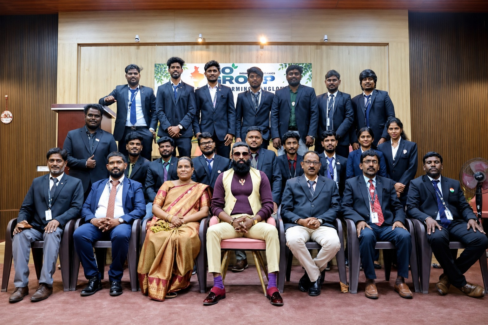
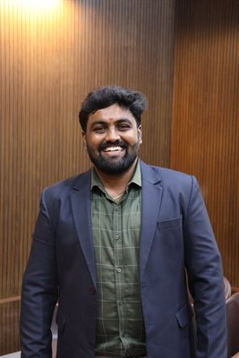

Meet the leaders driving India's fastest-growing farming ecosystem — from executive vision to department excellence.
Visionary leader who founded IGO Group in 2016 with a mission to build a world-class sustainable farming conglomerate. Drives group strategy, investor relations, and long-term vision across all 27 brands and 18 departments — transforming Indian farming through innovation, investment, and enterprise.
Senior directors overseeing group-level strategy & operations
Mr. Jagan
Chief Financial Officer
Group-level financial strategy, planning, and fiscal governance across all 27 brands and 18 departments.

Mrs. Reega Merlin Esther Newton
Director
Group-level strategy and operations as part of the senior leadership team.

Mr. Newton Varghese
Director
Group-level strategy and operations as part of the senior leadership team.
Cross-functional leaders bridging group strategy and daily execution

Mr. Vignesh Sridharan
General Manager — Management Ops
Operational governance, escalation management, and cross-functional coordination across all 18 departments.

Mr. Venkat
Head — Business Development (NSM) & BD
Growth strategy, partnerships, sales leadership, and new market expansion across the group.
CEO Office — executive support, strategic tracking & cross-department coordination

Mr. Deepak Adithiya
L1 Manager (BOI)
CEO Office — Strategic Tracking

Mr. Mohammed Ali I
L1 Manager (BOI)
CEO Office — Multiple Brands & Departments
Every department, its own section, A to Z

Mr. Tharun Kumar A
Head — Admin, CEO Office
Administration, documentation, facilities management, and internal compliance support.

Mr. Am Basha
Head — Agri Estate & Vendor Sourcing (NSM)
National agri estate acquisition, vendor sourcing, and procurement pipeline development across India.

Mr. Karthikeyan
SMO — Agri Operations
Field operations, crop scheduling, farm supervision, and yield performance management.

Mr. Lokesh
SMO — Agri Operations
Farm site management, input planning, field data collection, and daily operational reporting.

Mr. Ram Prasath
SMO — Agri Operations
Agri project execution, field team coordination, harvest planning, and quality monitoring.

Mr. Udaykiran
BD Manager
Lead generation, client engagement, proposals, and revenue pipeline growth.

Mr. Shiva
Core Manager — Buy-Back
Buy-back operations, quality checks, and farmer relationship management.

Mr. Rajesh
Core Manager — Civil
Civil construction, site infrastructure, and building works across IGO project sites.

Mr. Velladurai
Data Team Manager
Data management, reporting and analytics, and legal documentation support for the group.

Mr. Prasath Rajeswaran
GMO — Engineering
Project engineering, site execution, quality & safety control, and vendor coordination.

Mr. Amirthalingam S
Core Manager — Farmers Factory
Procurement, hub operations, and fresh-produce supply chain execution.

Mr. Sanjay Karan Ravi
HR Manager
Recruitment, attendance management, payroll coordination, and employee lifecycle management.

Mr. Sathish
HR Manager
Recruitment, attendance management, payroll coordination, and employee lifecycle management.
Ms. Shanmathi Sekar
Head — IGO Academy
Training design, skill development programs, and academic partnerships for IGO Group.

Mr. Vignesh A
Head — IT & AI
ERP and web platforms, AI and automation systems, and group IT infrastructure.

Mr. Raagul Raj R
Head — JV Engineering (SMO)
JV project delivery, site planning, contractor management, and execution quality assurance.

Ms. Aarthi
Head — Marketing
Brand strategy, digital campaigns, content, and market visibility across all group brands.

Mr. Sharuk
Marketing Manager
Campaign execution, creatives, social media, and on-ground promotional activities.

Mr. Hari Haran K
Core Manager — New Projects & R&D
New project development & strategy, engineering management, cost control, and execution excellence.

Mr. Saravanan
Head — Purchase
Procurement strategy, vendor negotiations, and purchase cost optimization for the group.

Mr. Yuthish Priyan
Head — R&D
Research initiatives, product prototyping, and innovation pipelines for IGO Group.

Mr. Punith
Core Manager — Site Visit
On-ground site visits, inspections, and field verification across IGO locations.